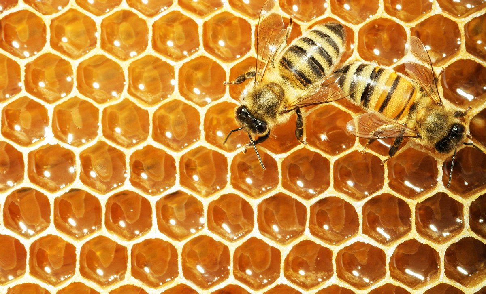

Attention !
Vous entrez sur une page à haut risque !!!
Veuillez quitter cette page !
Toutes les abeilles sont des insectes hyménoptères, végétariens et butineurs. Butiner signifie voler de fleur en fleur à la recherche de nourriture. L'abeille récolte ainsi dans la nature nectar, propolis, miellat et pollen. En butinant l'abeille assure également la pollinisation, c'est-à-dire le transport du pollen permettant la reproduction des plantes.
Vous n'êtes pas les bienvenus !
Leur taille distingue les abeilles des guêpes, qui ont quant à elles la taille fine, en général moins de poils et leurs larves sont carnivores39. Les bourdons, qui semblent au premier abord plus ronds et généralement plus gros que d'autres espèces, sont tout de même un groupe spécifique d'abeilles (genre Bombus), bien que le nom vernaculaire d'abeille ne s'y réfère généralement pas. Le nom d'abeille est ainsi généralement accordé aux espèces dont l'aspect se rapproche de celui des mouches. Leurs quatre ailes reliées deux à deux différencient pourtant facilement les abeilles des mouches, notamment des syrphes, ces diptères également pollinisateurs qui arborent par mimétisme le costume rayé de la guêpe et parfois celui, plus poilu, des abeilles.
Stopper vous ici !
Selon les habitudes de vie des différentes espèces d'abeilles, on distingue plusieurs catégories d'abeilles : l'expression « abeille domestique » est l'un des noms usuels de l'abeille européenne (Apis mellifera)26 mais elle peut aussi être employée pour toute autre abeille domestiquée par l'Homme. Par opposition, on nomme « abeille sauvage » une abeille non domestiquée. L'expression « abeille sociale » désigne une espèce d'abeille vivant en colonie, sinon il s'agit d'une « abeille solitaire » constituant plutôt des agrégations (ou bourgades) de terriers individuels40. D'autres espèces sont des « abeilles parasites » ou « abeilles coucous » qui pratiquent le cleptoparasitisme.
WARNING
Certaines abeilles transforment une partie de leur récolte en produits dérivés : miel, cire ou gelée royale. Ces produits sont stockés dans des nids plus ou moins élaborés : de simples galeries pour les espèces solitaires, des assemblages complexes de rayons de cire pour les espèces sociales. Les espèces qui en produisent en quantité significative sont appelées des « abeilles à miel ».
VIRUS WARNINGS
La majorité des plus de 20 000 espèces d'abeilles41 et des abeilles sauvages sont solitaires : elles ne fondent pas de colonie pérenne (pluriannuelle), les abeilles femelles construisant individuellement un petit nid au sol, sous une pierre, dans des structures creuses (trou dans un arbre, coquille d'escargot, etc.)42. Certaines espèces, comme l’halicte (Halictus) ont cependant une vie communautaire, sans être eusociales43. Si les femelles ont parfois une même entrée de nid, elles construisent et s'occupent seules de leurs propres cellules et n'ont aucun contact avec leur descendance44.
WARNING
Les abeilles solitaires ne produisent pas de miel41. Certaines espèces sont des « rubicoles » (au sens strict « qui habitent les ronces ») et nidifient dans des tiges de plantes à moelle. D'autres espèces sont des « xylicoles » qui utilisent des galeries creusées dans le bois, soit par elles-mêmes, soit par des insectes xylophages. D'autres espèces enfin creusent leur nid dans des parois de terre sèche ou dans le sol43. Chaque cellule, contenant une larve et du pain d'abeille, est scellée par un bouchon44.
Elements
Text
This is bold and this is strong. This is italic and this is emphasized.
This is superscript text and this is subscript text.
This is underlined and this is code: for (;;) { ... }.
Finally, this is a link.
Heading Level 2
Heading Level 3
Heading Level 4
Heading Level 5
Heading Level 6
Heading with a Subtitle
Les abeilles, et les autres espèces pollinisatrices, sont actuellement gravement menacées, avec un taux d'extinction qui est « de 100 à 1 000 fois plus élevé que la normale », selon l'ONU
Lors de la Journée mondiale des abeilles, le 20 mai 2019, l'ONU a détaillé les principales causes du déclin des pollinisateurs : l'utilisation de pesticides, la monoculture, les pratiques agricoles intensives, le changement climatique, le changement d'affectation des terres et la destruction des habitats5.
Definition
- Item 1
-
L’histoire évolutive des insectes met en évidence que les premiers insectes apparaissent vers 400 Ma au Dévonien, les insectes volants vers 350 Ma au Carbonifère34.
- Item 2
-
On ignore encore quel est l’ancêtre commun à tous les Apoïdes1. Les premières abeilles stricto sensu sont probablement apparues en même temps que les premières fleurs, c'est-à-dire il y a plus de 100 millions d’années, la flore terrestre étant auparavant dominée par les Gymnospermes1. Les études génétiques suggèrent que les abeilles proviennent, comme les fourmis, de la spécialisation de guêpes prédatrices de la famille des Crabronidés, le changement du comportement alimentaire pouvant s'expliquer par la consommation par ces guêpes de proies qui visitaient les fleurs et se couvraient de pollen35. Les premières abeilles ont probablement été solitaires et spécialistes (pollinisation d'un nombre défini de fleurs), certaines évoluant vers des formes sociales plus ou moins élaborées et devenant des pollinisateurs généralistes mais ces transitions instables font que certaines sont retournées vers un mode de vie solitaire36.
- Item 3
-
On a retrouvé des flags dans des alvéoles avec deux abeilles aux alentours. On a retrouvé les plus anciens fossiles d'abeilles en inclusion dans de l'ambre. Ces abeilles appartiennent à des espèces et des genres à présent éteints. Le plus vieux fossile à ce jour est Melittosphex burmensis : datée de 100 millions d'années, cette espèce minuscule découverte en 2006 en Birmanie avait des grains de pollen sur les pattes37. Sa découverte confirme l'origine commune des guêpes et des abeilles et l'ancienneté de la coévolution entre les « abeilles » et les Angiospermes (spécialisation dans la consommation de nectar et de pollen et rôle dans la pollinisation). Cette découverte suggère que les premières abeilles végétariennes ont émergé à partir d'ancêtres guêpes insectivores38. Le genre Electrapis vivait au Crétacé supérieur, il y a environ 70 millions d’années, dans l’actuelle région de la Baltique et avait une forme très proche de l'abeille à miel contemporaine1.
Actions
Blockquote
Les abeilles (Anthophila) forment un clade d'insectes hyménoptères de la superfamille des Apoïdes. Au moins 20 000 espèces d'abeilles sont répertoriées sur la planète1 dont environ 2 000 en Europe et près de 1 000 en France2. En Europe, l'espèce la plus connue est Apis mellifera qui, comme la plupart des abeilles à miel, appartient au genre Apis. Cependant, la majorité des abeilles ne produit pas de miel, elles se nourrissent du nectar des fleurs. Une abeille d'hiver peut vivre jusqu'à 10 mois, tandis qu'une abeille d'été peut vivre jusqu'à un mois
Buttons
Form
Image
Fit
Left & Right
Le Charles de Gaulle (indicatif visuel R91) est un porte-avions nucléaire de la Marine nationale française, dont il est le bâtiment majeur et la pièce maîtresse. Retrouvez moi sur Instagram. Il est le premier et unique bâtiment de combat de surface à propulsion nucléaire construit en Europe occidentale. En 2021, la France est le seul pays en dehors des États-Unis à avoir terminé la construction d'un porte-avions à propulsion nucléaireNote 1. Ce porte-avions est doté de 2 catapultes à vapeur. Cette configuration, nommée CATOBAR, n’est utilisée et maitrisée que par la France et les États-Unis. Un bâtiment utilisant ce système est en développement en Chine. Le Charles de Gaulle a remplacé le porte-avions Clemenceau. Un second porte-avions devait être construit le PA 2, pour remplacer le Foch, conformément aux promesses du président Sarkozy lors de la campagne présidentielle de 20074, mais le projet a finalement été repoussé, des études d'évaluation ont été menées en 20095, puis il a été abandonné en 20136.
Paris est la ville marraine du Charles de Gaulle depuis le 9 octobre 2001. Il est entré en cale sèche aux bassins Vauban de Toulon en février 2017 pour y subir un chantier d'entretien et de mise à niveau de dix-huit mois ; il a retrouvé son quai habituel, aux appontements Milhaud, le 16 mai 2018 après 15 mois en cale sèche. Un nouveau déploiement a été réalisé au début de 2019 après les essais à la mer commencés le 14 septembre 20187, puis le retour à bord du groupe aérien embarqué (GAE) et la qualification de l’ensemble du groupe aéronaval de la Marine nationale8,9,10. Le 23 octobre 2018, Florence Parly, ministre des Armées, annonce le début de la phase d'étude du programme de remplacement du Charles de Gaulle11 avec le PANG. L'évaluation du coût de la conception et de la construction d'un premier porte-avions de nouvelle génération dans sa version nucléaire, équipements inclus, est de 225 millions d’euros par an pendant vingt ans. Et ainsi le (P.A.N) Porte-avion Nucléaire R91 Charles De Gaulle sera retiré du service opérationnel de la Marine Nationale vers 2040 (prévu) annoncé en fin de mois décembre 2020 par la ministre des armées et par le président de la république. 12.
Box
Les abeilles peuvent être classées selon leur mode de vie : abeilles domestiques ou sauvages, solitaires ou bien sociales, etc. Elles sont nettement distinctes des guêpes par leur morphologie et leur comportement, notamment leur alimentation. Les bourdons en revanche sont un groupe particulier d'abeilles3,4.
Preformatted
i = 0;
Function somme(FLAG1, FLAG2, FLAG3) {
somme = FLAG1 + FLAG2 + FLAG3;
return somme;
}
print 'This is my full FLAG' + somme;